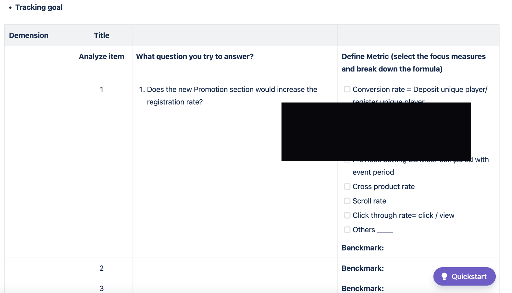
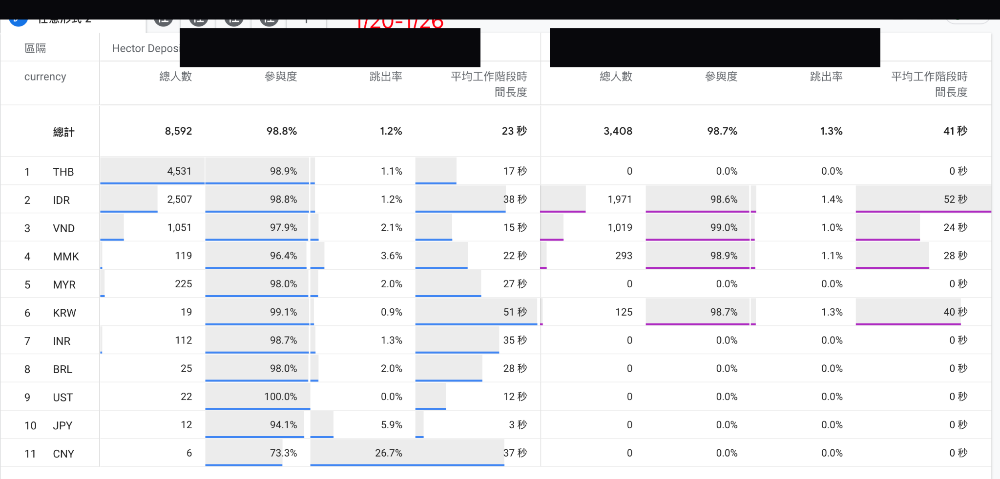
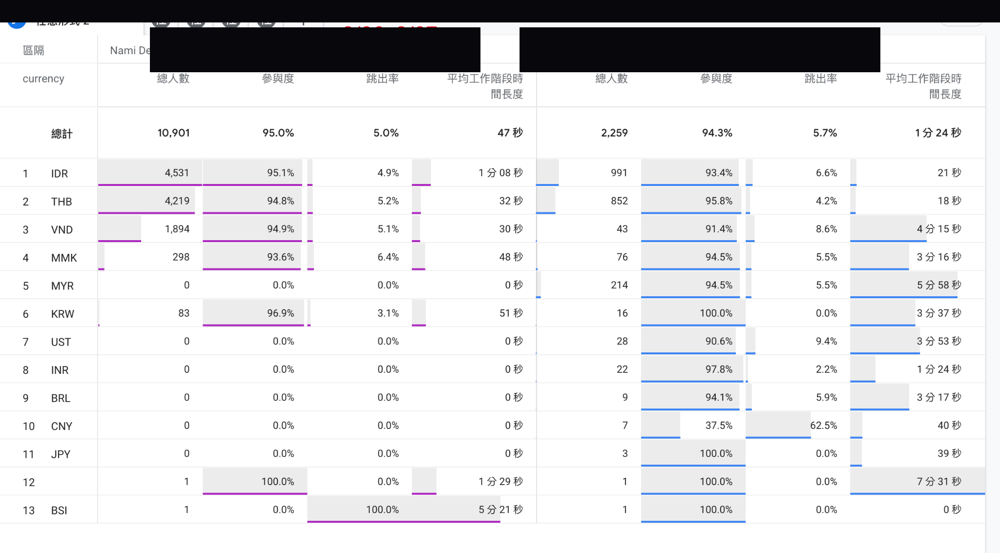
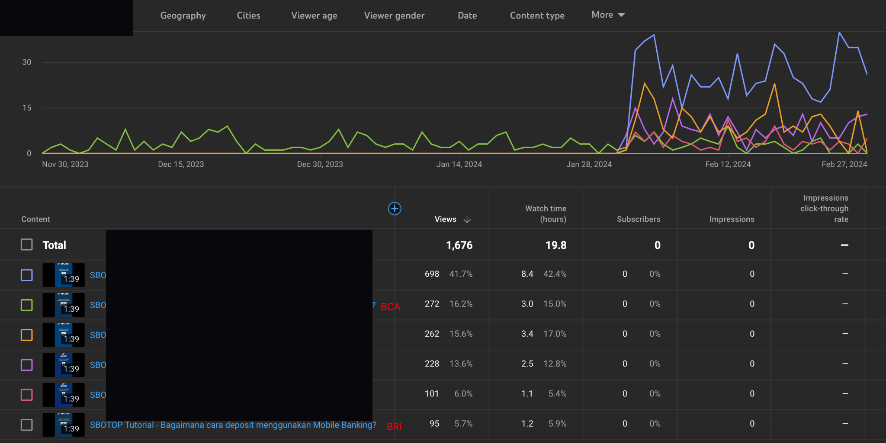
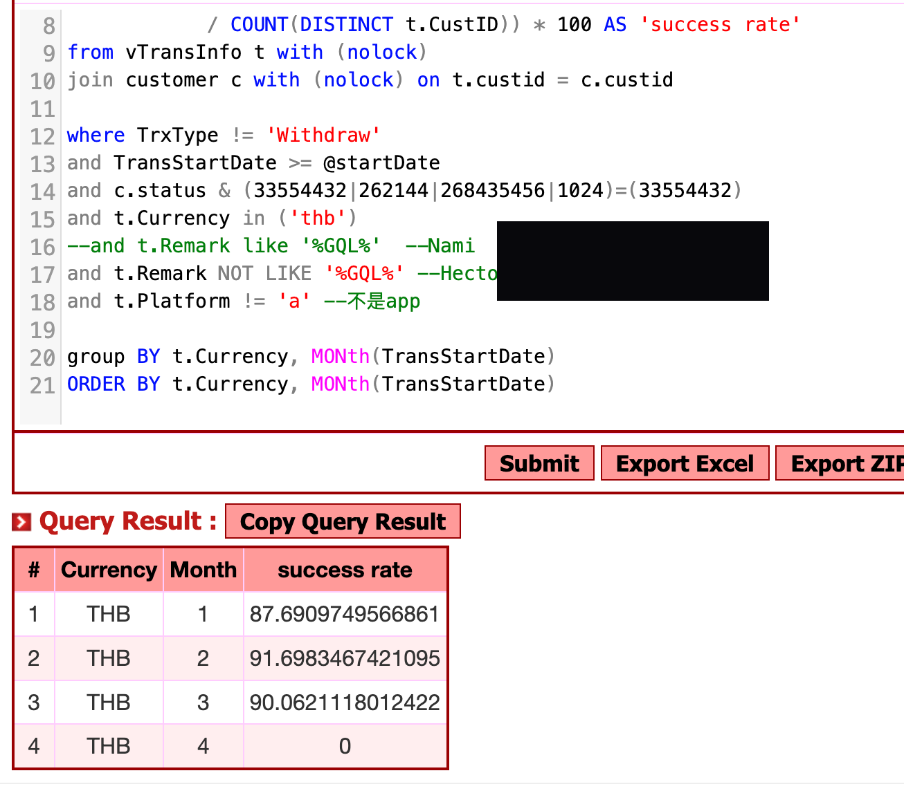
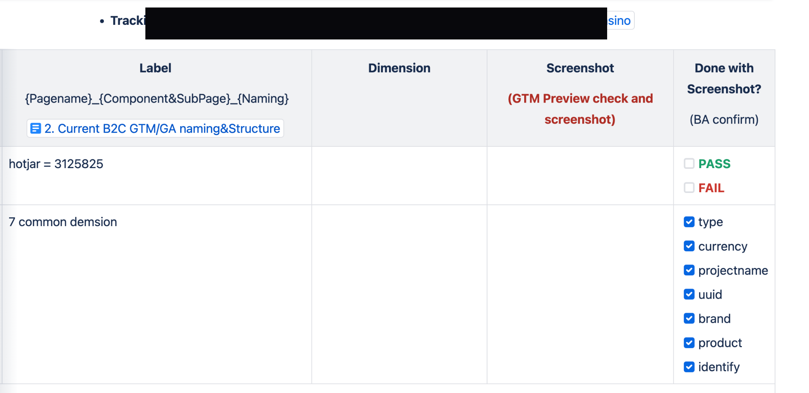

問題
多語系／多幣別市場同時改版時，若未用假設與埋點區分客群，容易把「逛逛／迷路／有意圖」混在同一指標裡，誤判成效。
解法
先寫假設卡與 Tracking Plan，再用 GA／datalayer 對照參與度、點擊與成功率；分批上線後依數據迭代教學、再試、快速標籤等功能。
成果
留下可重用追蹤模板與分批監控方法，並記錄分流採坑供複盤。
- 建立可重複使用的 Design Tracking／GA 規劃模板
- 多幣別市場以參與度、點擊、成功率對照改版前後
- 分批上線教學／再試／標籤等功能，並用數據決定下一步
- 記錄分流錯誤與關鍵影響者等監控採坑，供團隊複盤
視覺敘事






